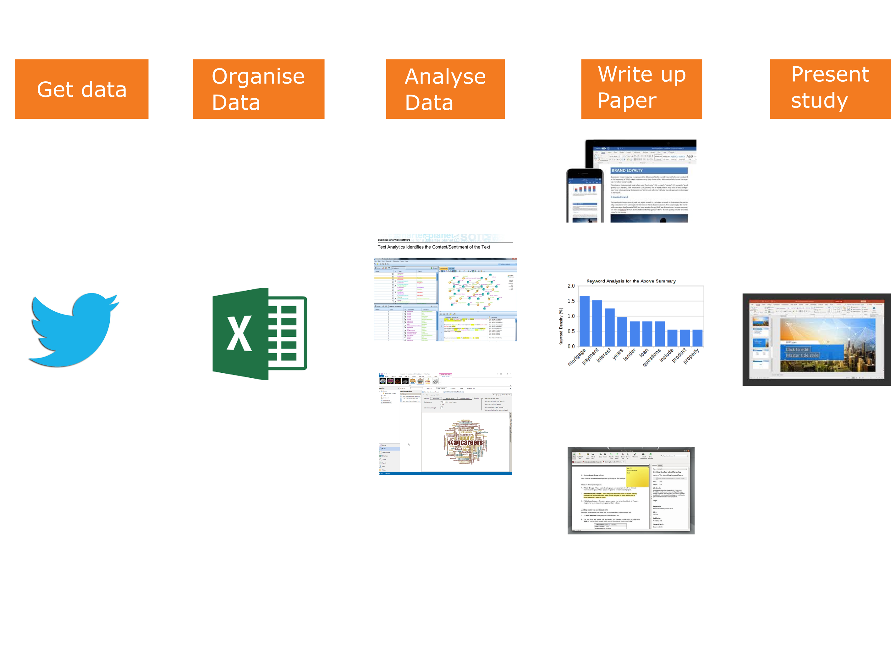
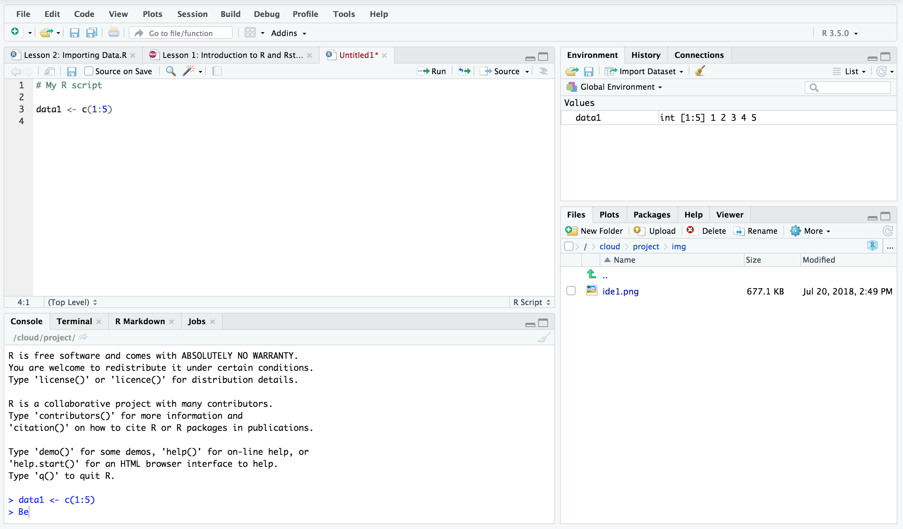
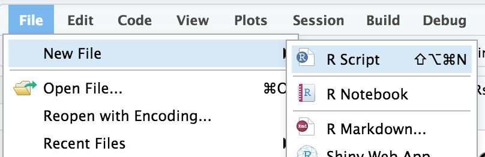
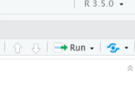
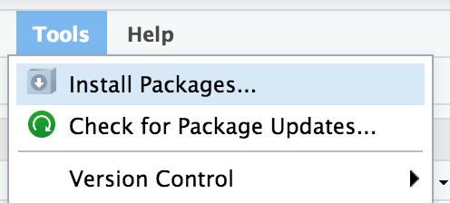

0.1 By the end of this section, you will be able to:
- List some perceived advantages and disadvantages of working with R in comparison to other stats tools (e.g. SPSS)
- Distinguish between R and R studio
- Identify the R script, R console, Data environment and file browser in R studio
- Install and load R packages
- Write and run R code from a script
- Create a data vector and assign it to a variable
- Perform basic arithmetic operations in R
1 Why learn / use R?
1.1 R is developed and used by scientists and researchers around the world
- Open source = no cost
- Constant development
- Connects to other data science/research tools
- Worldwide community: training widely available
- Encourages transparency and reproducibility
- Publication-ready outputs
2 Moving from other software to R
2.1 Disconnecting statistics from software (e.g. Excel, SPSS)
- Workflow is different
- Organise files and data differently
- Workspace can contain data and outputs
- Can manage multiple datasets within a workspace
- Learning curve can be steep initially
- e.g. Variables and coding, scripts
- Need to know what you want
- e.g. building your regression model / ANOVA error terms
2.2 R has many advantages
- Using scripts means analysis is easy to follow and reproduce
- R scripts are small, online collaboration, no SPSS “older version” problems
- Data can be organised and reorganised however you need it (tidyr)
- Packages are available for “cutting edge” analysis: e.g. Big Data & Machine Learning
- A robust language for precise plots and graphics (ggplot)
- R analysis code can be embdeded into documents and presentations (R Markdown)
3 Example: Sentiment analysis of twitter posts
3.1 Possible Workflow

3.2 Workflow using R and RStudio
- Use R to pull down tweets
- Use R to organise data
- Use R to conduct analysis
- Use R to graph data
- Use R to write paper
- Use R to make conference presentation or poster
4 How does that work?
4.1 R can interface with other tools and platforms making data gathering easier
For example:
- The twitteR or Rfacebook packages for working with social media data
- Packages for scraping the web
- Packages for incorporating AI (e.g. voice recognition for transctiption)
4.2 R has “best in class” data analysis and presentation features
- R has packages for text analysis using: speech pattern analysis, keywords, phrases, frequency of use etc.
- Can code transcripts for within R
- Can manipulate and present data in a variety of graphical formats
4.3 R Studio incorporates document formatting
- It is possible to include your analysis inside your document
- The same source files can be used to generate almost any type of output
- (e.g. pdf, word, html, images, diagrams)
- The same file can be automatically rearranged into any type of format
- (e.g. research papers, posters, presentations, books, websites)
5 Working with R
5.1 What is the difference between R and R studio?
- R is a programme that runs in the background to analyse the data
- R studio is programme that sits on top and makes it more user-friendly to do work with R
5.2 Layout of R studio

5.3 The windows in R Studio
- MAIN TOP: R Script files or R Document Files
- Where we usually type our code as a script before we run it. Script files are usually saved so we can work on them and rerun the code again later (.R files).
- MAIN BOTTOM: Console
- Shows the output of our R code. We can type R code directly into the console and the answer will ouput immediately. However, it is more convenient to use code files.
- RIGHT TOP: Environment
- Contains all of the objects (e.g. data, analysis, equations, plots) that are currently stored in memory. We can save all of this to a file and load it later (.RData files).
- RIGHT BOTTOM: File Browser
- The folder that R is working from is called ‘the working directory’ and it will automatically look for files there if we try to import something (e.g. a data file). Using the more button on the file browser allows you to set your desired working directory.
5.4 Working with script files
Scripts can be opened from the File menu

5.5 Working with script files
- You can type your analysis code and save it for use later
- Script files have a .R extension
- To run a script, you click the Run button. You can choose to:
- Run the whole script
- Run the selected line of code
5.6 Working with script files

5.7 Objects and variables
- Most things in R are stored as objects in the environment
- An object can be a data file, a plot, an equation or some code
- This allows us to work with many data sets at once
5.8 Objects and variables
- Objects can be stored in the following way:
5.9 Objects and variables
- Objects can be recalled by typing their name
## [1] 25## [1] 11## [1] 1 2 3 4 6 45## [1] 3.125681 4.662358 -0.028421 4.423961 6.473350 8.075148##
## Pearson's product-moment correlation
##
## data: myData and z
## t = 1.802, df = 4, p-value = 0.1459
## alternative hypothesis: true correlation is not equal to 0
## 95 percent confidence interval:
## -0.3112885 0.9596290
## sample estimates:
## cor
## 0.66937745.10 The Environment and History
- In the window on the top right, we can see the Environment tab
- the Environment tab contains our current Workspace. That is: all of the objects that are currently loaded into memory
- The Workspace can contain: datasets, variables, fuctions, plots, the results of tests.
- It is possible to work with many datasets at the same time by loading them into the current Workspace
- The History is a list of all of the commands we have entered into R.
- It is possible to save the Workspace and History files for later use.
5.11 Basic functions
- R has many built-in functions. For example, Mean, Standard Deviation, Sum, Min/Max
## [1] 147.5## [1] 354.5794## [1] 15.12 Packages in R
- Packages add extra functionality to R
- They can be installed via the menu (Tools -> Install Packages)
- The can also be installed using code: install.packages()
5.13 Packages in R
TidyR is a package that contains functions for sorting and organising data.
To install the package “tidyr”

5.14 Packages in R
Once a package is has been installed, you can load it using the library() command:
For example:
library("tidyr")6 Introduction to R and R studio – Tasks:
6.1 Lesson 1: Tasks
- Use the file menu to create a new R script
- Save the script and call it Analysis1.R
- You can use the # symbol before lines of text to create comments in your script. This helps to keep it organised and seprate chunks of code. At the top of your new script file, create a comment that says “Introduction to R: Lesson 1”
- Ask to other people in the room what age they are. Create a data vector with 3 values, your age and the two others. Name your data object Ages (See “Basic Functions” for example of creating a data vector).
- Use the mean function to calculate the mean age of your Ages dataset.
- Use the sd function to calculate the standard deviation of your Ages dataset.
- Create a new data object called Ages2 which is your Ages dataset multiplied by 2.
- ggplot2 is a package that can make publication-standard plots of your data. We will be using it later. Install the package ggplot2 and use the library command to load it.
- Save your script file if you have not already done so (keep it open).